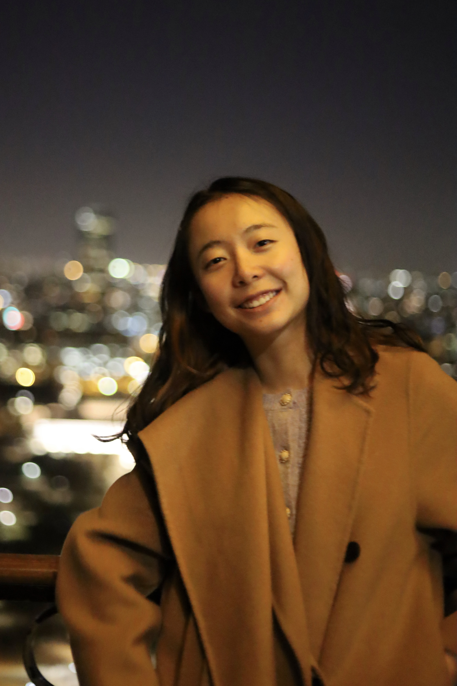
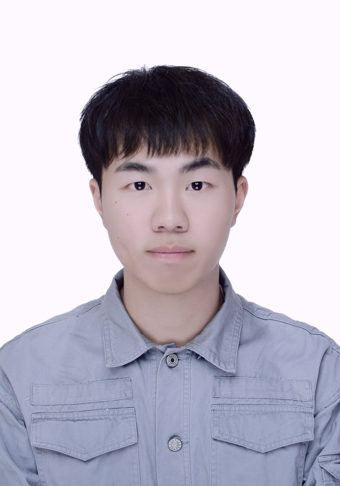
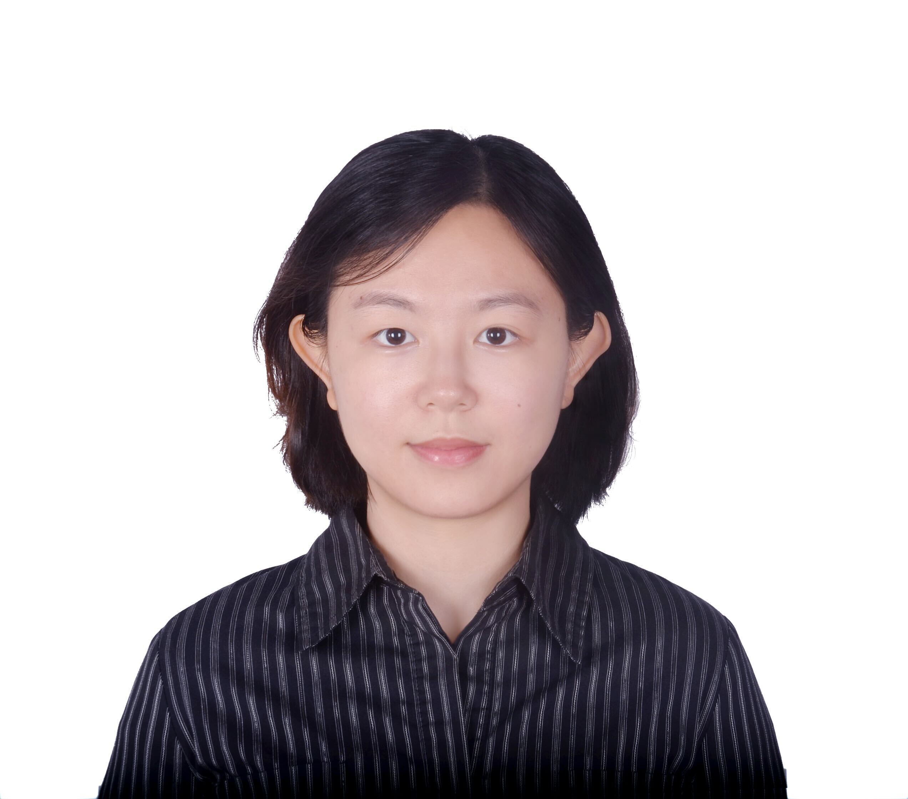
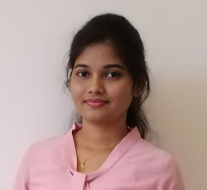

People
Current students
PhD supervision

Jiaheng Dong (2025-)
University of Melbourne
Co-supervised with Abhirup Ghosh and Jean Honorio Carrillo



Ye Bai (2025-)
University of Melbourne
Co-supervised with David O'Neal and Dale Morrison

Jie Huang (2025-)
University of Melbourne
Co-supervised with Daniel Capurro Nario and Galit Almoznino
Jian Xiang (2025-)
University of New South Wales (UNSW)
Co-supervised with Vidhyasaharan Sethu
PhD mentoring

Graduate students (University of Melbourne)
| • Selina Lim (2025) | • Benjamin Hong (2025) | • Di Zhu (2025) | • Sung Kyun Chung (2025) |
| • Trevor Adelson (2025) | • Qiuchi Hu (2025) | • Jinuo Sun (2025) | • Jiajun Lu (2025) |
| • Jiasheng Xu (2025) | • Haoguang Zhou (2025) | • Hongyu Jin (2025) |
Alumni
PhD
| • Yu Wu (2022-2025), University of Cambridge, mentored with Cecilia Mascolo. Postdoc at Dartmouth College |
| • Zheng Nan (2021-2025), UNSW, Co-supervised with Vidhyasaharan Sethu and Beena Ahmed. Postdoc at UNSW |
| • Jingyao Wu (2020-2024), UNSW, Co-supervised with Vidhyasaharan Sethu and Eliathamby Ambikairajah. Postdoc at MIT |
| • Tong Xia (2021-2023), University of Cambridge, mentored with Cecilia Mascolo. Assistant Professor at Tsinghua University |
| • Xijia (Simon) Wei (2023), Internship at Nokia Bell Labs UK, University College London |
| • Sotirios Vavaroutas (2022), University of Cambridge, project mentoring with Cecilia Mascolo. |
| • Kayla Butkow (2021-2023), University of Cambridge, project mentoring with Cecilia Mascolo. CTO & Co-founder at auryx |
Graduate and Undergraduate
| • Wenda Zhang (2025) | • Shuaixin Xu (2025) | • Xi Chen (2025) | • Trini Manoj Jeyaseelan (2025), UNSW | |
| • Jule Valendo Halim (2024) | • Xin Hong (2024) | • Feixiang Zheng (2024) | • Xuanang Li (2024) | • Xin Wang (2024) |
| • Thomas Quinnell (2021), Uni of Cambridge | • Haobing Zhu (2020), UNSW | • Yang Yu (2020), UNSW | • Jinhao Gu (2020), UNSW | • Anubhuti Gupta (2020), UNSW |
| • Anda Ouyang (2018), UNSW | • Mo Li (2018), UNSW |